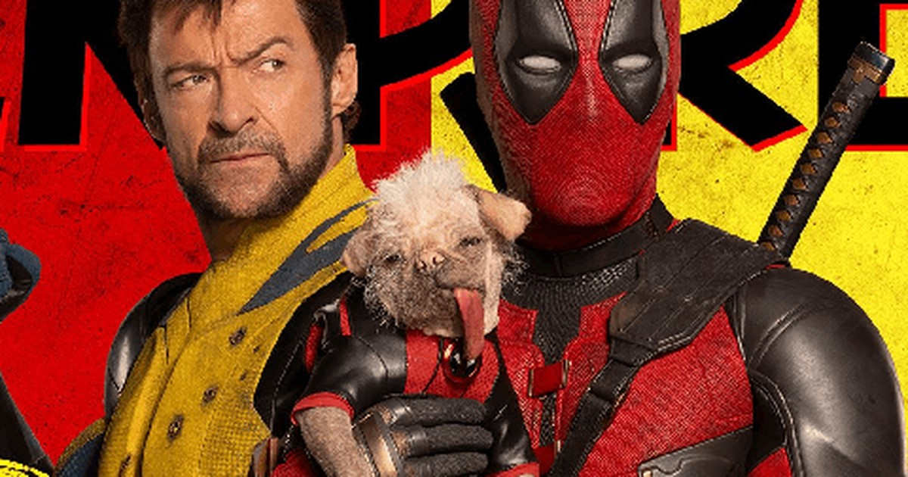

Deadpool & Wolverine
Estreia - 25 de julho de 2024
Sinopse
Não recomendado para menores de 18 anos.
Deadpool & Wolverine reúne o icônico mercenário tagarela Wade Wilson (Ryan Reynolds) e o poderoso mutante Wolverine (Hugh Jackman) em uma aventura explosiva, escrita e produzida pelos mesmos talentos por trás de Deadpool (2016) e Deadpool 2 (2018). Wade Wilson desfruta de um momento de aparente calma ao lado de Vanessa (Morena Baccarin) e seus amigos e, em contra partida, Wolverine se recupera de seus ferimentos. Um têm os seus caminhos cruzados com o outro, dando início a uma improvável aliança. Juntos, eles enfrentam um inimigo formidável em comum, desencadeando uma jornada repleta de ação, humor e reviravoltas surpreendentes. Deadpool & Wolverine promete ser uma aventura épica, cheia de referências aos quadrinhos e momentos de pura adrenalina, proporcionando aos fãs uma experiência única e inesquecível no universo dos super-heróis.